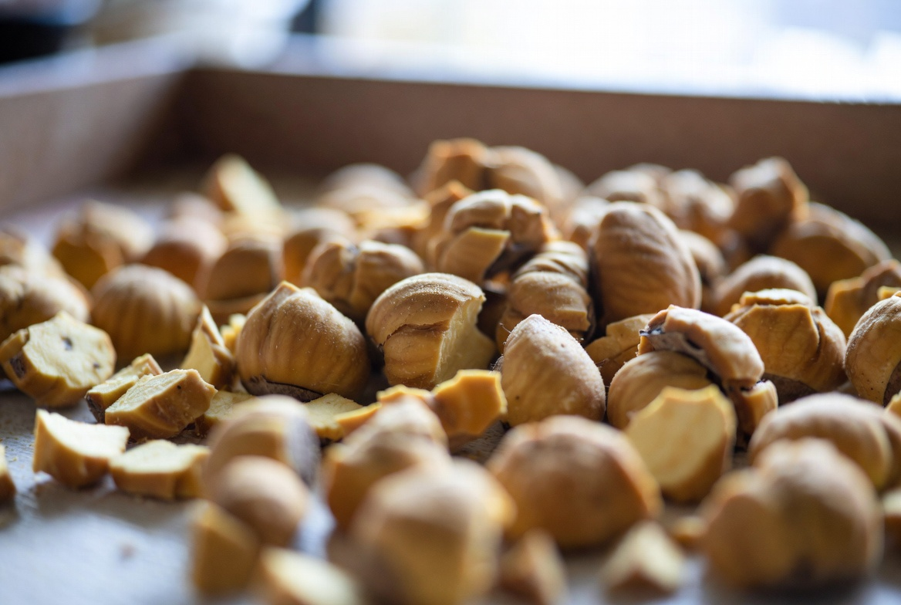

만들려던 빵 / 목표
목표는 여전히 기억 속 밤식빵입니다. 1~6차는 주로 통조림 밤으로 통일해 시럽·시점·수분·보관 변수를 쌓았습니다. 중간 정리 후보에 있던 가을 신선 밤을 7차에서 열었습니다.
2025년 10월 22일 7차 실험입니다. 6차에서 맞춘 고정값(2차 시점, 3차 수분 +2%p, 4차 루즈 백, 5차 졸임 +2분, 6차 설탕 -10%)을 그대로 두고, 밤 재료만 통조림 → 신선 밤으로 바꿨습니다. 시럽·반죽·굽기·보관은 동일합니다.
어릴 적 빵집 밤은 통조림 느낌이 아니라 살이 단단하고 고소했습니다. 여름 내내 통조림으로 변수를 맞춘 뒤, 재료를 바꿀 때가 되었다고 판단했습니다. 그날은 변수 하나만 — 이번에는 재료 하나입니다.
신선 밤은 전날 삶아 껍질을 벗기고, 크기가 비슷한 조각만 골라 6차와 비슷한 총량을 올렸습니다. 손질 시간이 길어져 반죽·발효 타임라인은 메모에 따로 적었습니다.
실패 1~3 — 눈에 보인 현상
- 향·고소함 — 통조림보다 뚜렷함. 구운 직후 방에서 '가을 밤' 냄새가 남. 기억과 방향이 맞는다는 메모
- 덩어리감 — 밤 크기 편차 때문에 한 입마다 다름. 큰 조각은 따로 씹히고, 작은 조각은 빵과 잘 붙음
- 밀착·단맛 — 6차 수준 유지. 신선 밤이 수분을 조금 더 내며 겉 시럽이 희미하게 흘러내린 구간 있음
가족은 '밤 맛이 더 살아 있다'고 했습니다. 제 기준으로는 재료 교체의 조금 나아졌다이었습니다. 향과 식감은 나아졌지만, '한 입 전체가 한몸'인 순간은 여전히 매번이 아니었습니다.

실패 목록에 '크기 편차'를 넣은 이유는, 재료만 바꿨을 때도 손질·선별이 결과에 큰 영향을 준다는 기록을 남기기 위해서입니다. 레시피 숫자만의 문제가 아닙니다.
단면 사진에서 신선 밤 조각이 통조림보다 불규칙했습니다. 맛은 좋아졌지만 성형·토핑 단계에서 '같은 크기로 썰기'가 다음 손질 과제로 메모에 올라갔습니다.
신선 밤은 삶은 직후 껍질이 잘 안 벗겨져, 전날 밤에 미리 손질해 두었습니다. 실험 당일 아침에 반죽만 하니 주방이 덜 혼잡했고, 그 운영 방식도 일지에 남겼습니다.
원인 추정 (추정 vs 확인)
신선 밤 → 향·고소함 상승 — 확인. 구운 직후·다음 날 모두 통조림보다 나음
덩어리감 들쭉날쭉 — 추정·부분 확인. 조각 크기·숙도 편차. 선별 없이 올리면 한 입 경험이 달라짐
미세 흘러내림 — 추정. 신선 밤 수분이 시럽 층을 살짝 희석. 6차 대비 큰 차이는 아님
7차는 '재료만 바꿨다'고 적었지만, 실제로는 손질 품질도 함께 움직였습니다. 완전히 같은 조건은 아니며, 그 한계도 메모에 남깁니다.
통조림은 편했지만 기억과 거리가 있었습니다. 신선 밤은 반대로 손이 많이 가지만 향에서 보상이 있었습니다.
바꾼 변수 하나
고정: 6차까지의 반죽·시럽·토핑 시점·보관·굽기. 바꾼 것: 밤 재료 — 통조림 슬라이스 대신, 전날 삶아 껍질 벗긴 국산 밤을 비슷한 두께로 썰어 올림. 총 중량은 통조림 때와 ±5% 이내.
2025년 10월 22일, 실내 21°C. 반죽 종료 24°C, 1차 발효 55분(저온·건조 보정), 굽기 200/190°C 32분. 밤은 성형 직전이 아니라 6차와 같이 1차 발효 후 올렸습니다.
손질 메모: 삶은 시간 12분, 껍질 제거 후 실온 2시간 건조. 너무 촉촉한 밤은 제외. 이 손질 줄도 재현 메모에 포함했습니다.
통조림과 신선 밤을 나란히 올려 본 사진에서, 신선 밤 조각이 불규칙해 토핑 높이가 들쭉날쭉했습니다. 맛은 나았지만 성형 단계에서 '같은 두께로 썰기'가 다음 숙제로 올라갔습니다.
다음 시도 계획
- 8차: 7차 조건 + 굽기 직후 얇은 시럽 브러싱 (6차에서 약해진 밀착 보정 후보)
- 신선 밤 선별·크기 맞추기 루틴 정리 후 9차 재료 반복 검토
- 겨울 실내에서 6·7차 고정값 재현
7차에서 재료 이득은 확인했고, 밀착·윤기는 8차로 넘깁니다. 굽기 후 브러싱은 단맛을 크게 올리지 않고 겉 결합만 보는 시도로 계획했습니다.
8차 전에 브러싱용 시럽을 6차 시럽보다 더 묽게(물 한 스푼 추가) 준비할지 메모만 남기고, 그날까지 확정하지 않았습니다.
왜 가을에 재료를 바꿨는가
여름 1~5차는 공정 변수에 집중했습니다. 재료를 동시에 바꾸면 시럽·시점 실험과 비교가 어렵습니다. 통조림은 변수 통제에 유리했습니다. 슬라이스 두께·당배도가 비슷해 '오늘은 시럽만 바꿨다'고 말할 수 있었습니다.
가을이 되면 신선 밤 품질이 좋아지고, 기억 속 맛도 '가을 밤' 쪽에 가깝습니다. 6차에서 단맛 축을 맞춘 뒤 재료를 열기로 한 순서입니다. 통조림으로 쌓아 온 고정값이 있어야 신선 밤 효과만 분리해 읽을 수 있습니다.
읽기 순서 안내에도 있듯, 7차는 6차 전제 위에서 읽어야 합니다. 5차까지의 여름 기록과 겨울 재현 계획 사이에 끼운 가을 재료 실험입니다.
시장에서 산 밤은 크기가 들쭉날쭉했습니다. 실험 전날 밤에 미리 골라 두지 않으면 반죽 대기 시간이 길어져 발효 변수가 섞일 수 있어, 손질은 전날 끝내는 쪽으로 맞췄습니다.
R&D 일지를 읽는 분께
신선 밤과 통조림을 비교해 보신 분이 있다면, 손질 방법·크기 맞추기·밀착 차이를 문의로 알려 주세요. 지역·품종마다 답이 다릅니다.
6차를 아직 안 보셨다면 6차 → 7차 순으로 읽으시면 재료 변경 맥락이 잡힙니다.
실전 적용 노트
실험 당일 메모: 2025-10-22, 신선 밤(삶기 12분), 6차 고정값, 루즈 백. 통조림 6차와 나란히 단면·다음 날 사진.
재료만 바꿀 때도 총 중량을 맞췄습니다. 밤이 가벼워 보이면 덜 올리고 싶은 유혹이 있지만, 그러면 토핑 비율이 달라집니다. 저울로 맞췄습니다.
발행 2026-06-19, 실험 2025-10-22.
신선 밤 손질에 시간이 걸려 반죽이 기다리는 동안 건조되지 않게 덮밥을 썼습니다. 이건 재료 변수가 아니라 당일 운영 메모입니다. 다만 발효 결과에 영향을 줄 수 있어 기록에 넣었습니다.
7차 다음 날 아침에 통조림 6차 조각과 신선 7차 조각을 나란히 먹어 보았습니다. 향 차이는 분명했고, 촉촉함은 비슷했습니다.
정리하며
7차는 통조림에서 신선 밤으로 재료만 바꾼 날이었습니다. 향과 고소함은 기억 쪽으로 가까워졌고, 크기 편차와 덩어리감은 과제로 남았습니다. 다음 8차에서는 굽기 후 시럽 브러싱을 시험합니다. 8차에서 굽기 후 브러싱을 시험합니다.
초보자가 자주 실수하는 포인트
- 재료만 바꾼다며 시럽·반죽까지 같이 손대기
- 신선 밤 손질·선별 과정을 기록하지 않고 '재료 효과'만 말하기
- 향이 좋아졌다고 덩어리감·밀착까지 해결됐다고 착각하기
- 밤 총량을 눈대중으로 맞춰 토핑 비율을 흐리기
체크리스트
- 6차 고정값 재확인
- 밤 총 중량 ±5% 이내 맞추기
- 손질·선별 과정 한 줄 메모
- 통조림 대비 향·덩어리감·다음 날 식감 기록
자주 묻는 질문
- 7차에서 시럽이나 수분도 바꿨나요?
- 아닙니다. 6차까지 맞춘 시럽(설탕 -10%, 졸임 +2분), 수분 +2%p, 보관, 토핑 시점은 그대로였고 밤 재료만 바꿨습니다.
- 신선 밤이 더 낫다는 결론인가요?
- 향·식감은 신선 밤이 나았습니다. 다만 손질·크기 편차 이슈가 남아, 선별 루틴을 더 정리한 뒤 다시 비교할 예정입니다.
이 글은 운영자의 직접 경험을 바탕으로 작성되었으며, 오븐·재료·환경에 따라 결과는 달라질 수 있습니다. 식품 위생·알레르기 등 건강 관련 판단을 대체하지 않습니다.